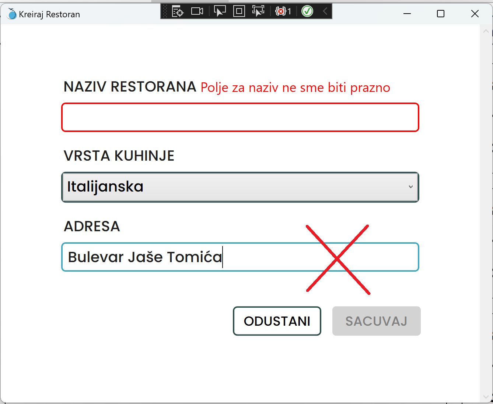
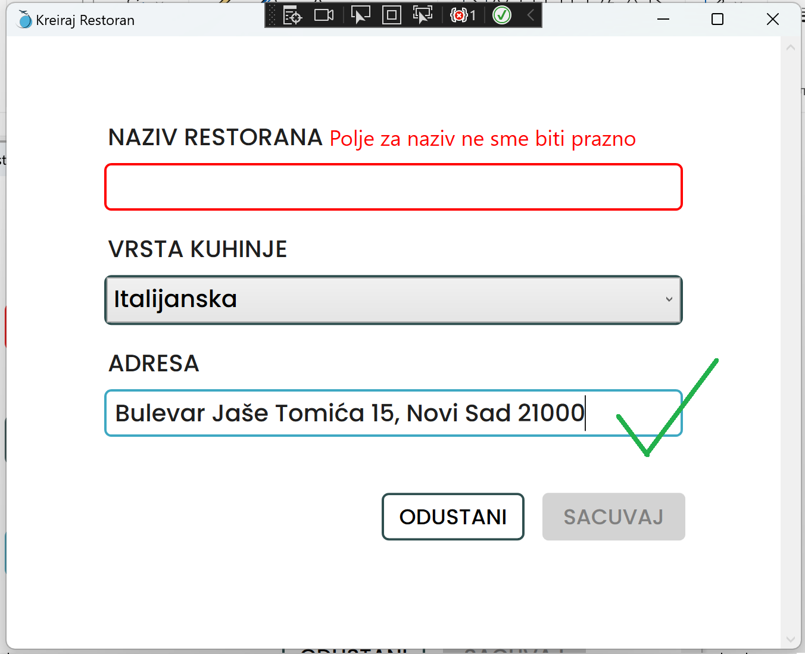
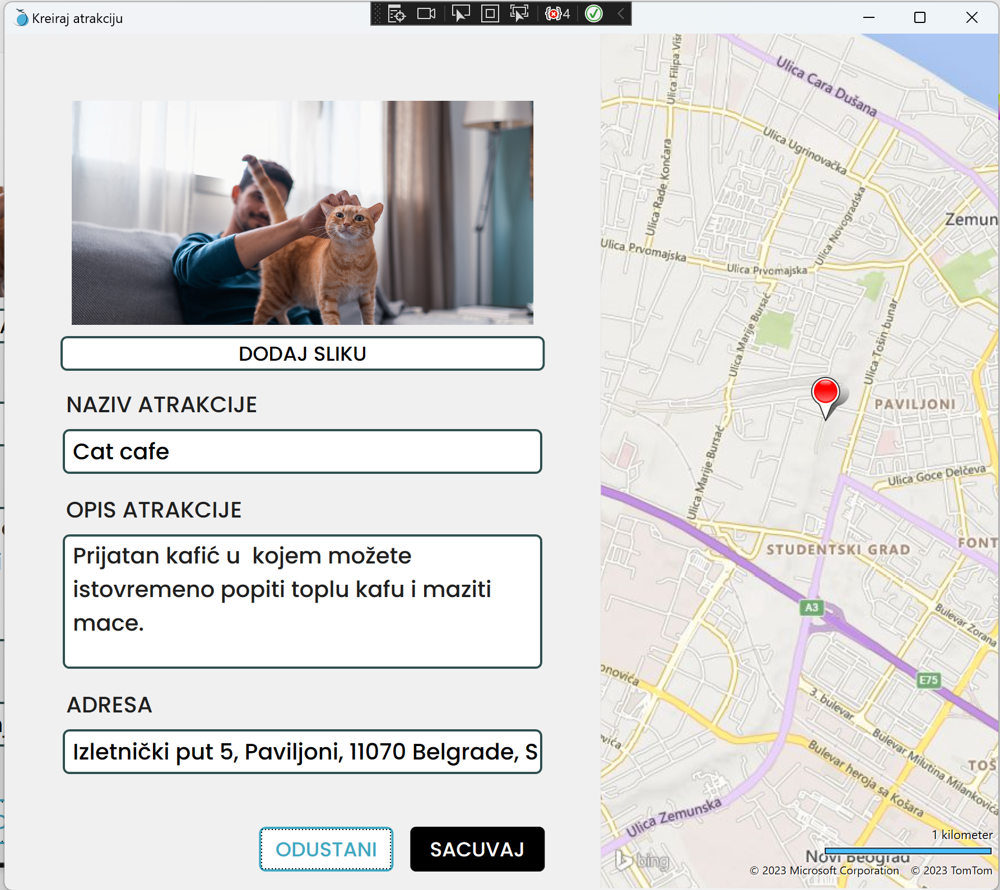

Dodavanje adrese prilikom kreiranja novog restorana/smestaja/atrakcije
Prilikom unošenja adrese , preporučuje se da pazite na to koliko je detaljna. Za pravilan rad mape potrebno je da unesete barem:
ULICU BROJ_ZGRADE, GRAD POŠTANSKI_BROJ
Primer pravilnog unosa imate prikazan na sledećim slikama.


U slučaju da u Vašoj formi postoji i mapa, adresu takođe možete izabrati duplim klikom na mapi, i forma će Vam se automatski popuniti podacima.
